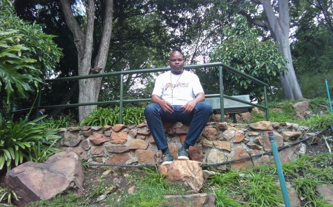
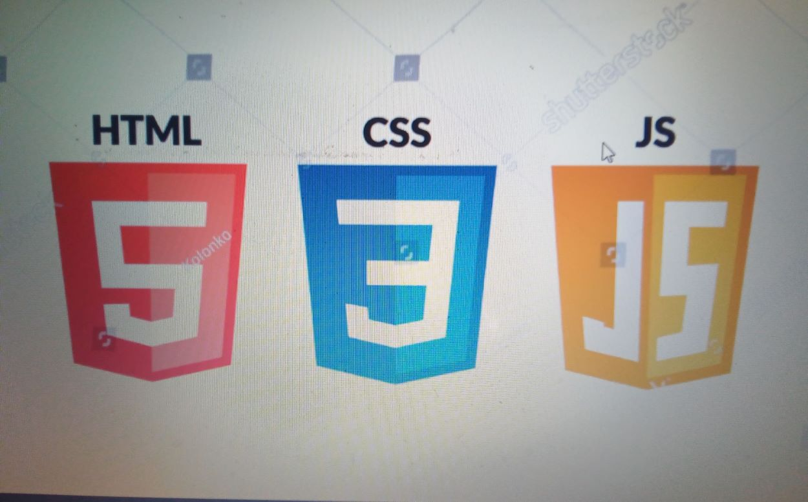

Siyabonga Bafanabakhe Mabuza
About Me
I, Siyabonga Bafanabakhe Mabuza, was born in the vibrant kingdom of ESwatini formally known as Swaziland, and currently reside in South Africa. My passion for technology and innovation has led me to pursue a degree in Information Technology, specializing in software development. Driven by a curiosity for the world around me, I enjoy exploring new places and immersing myself in different cultures. This love for adventure complements my academic pursuits, as I constantly seek to learn new things and expand my horizons. My journey is marked by a commitment to personal growth and a desire to contribute meaningfully to the tech industry. As I navigate my studies, I remain excited about the possibilities that lie ahead in both my professional and personal life.
My Hobbies and Interests
Beyond my academic pursuits, I have a keen interest in hiking and photography. Exploring the diverse landscapes of Southern Africa allows me to combine my love for nature with my creative side. I often document my adventures through photography, capturing the beauty of the natural world. These activities provide a refreshing balance to my studies and fuel my inspiration for problem-solving in software development.
Web Dev Resources
- Dev.to Community
- Smashing Magazine
- CSS Tricks
- W3 Schools
- Udemy
- Image Placeholder